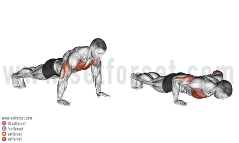

- Krafttraining
- Turnen
Kraftraining
Durch Freunde und die sozialen Medien bin ich darauf gekommen, einerseits, durch Anfängerworkouts auf Youtube oder auch durch Werbungen
für beispielsweise Hanteln. Im moment trainiere ich mindestens drei Mal pro Woche, dabei habe ich
einen sogenannten "Push-Pull-Leg" oder kurz "PPL" Plan und trainiere somit einen Tag alle Muskeln, die bei einer Drückbewegung benutzt
werden, diese sind: die Brust, die Schultern und der Trizeps. An meinem "Pull-Day" Trainiere ich den Rücken, den Bizeps und die Unterarme.
Das dritte Workout ist dann der Leg-Day, an diesem Tag trainiere ich möglichst alle Muskelgruppen der Beine.

Turnen
Im Moment mache ich bei den Disziplinen Sprung und Schaukelringe mit, jedoch bei den Schaukelringen nur als Anstösser.
Ich wurde von Freunden überredet einmal mit zu kommen, so kam es dazu, dass ich anfing zu turnen. Weil es der Verein eines kleinen Dorfes ist,
kannte ich schon einen Teil der Leute die im Verein sind, was den Start um einiges einfacher machte.